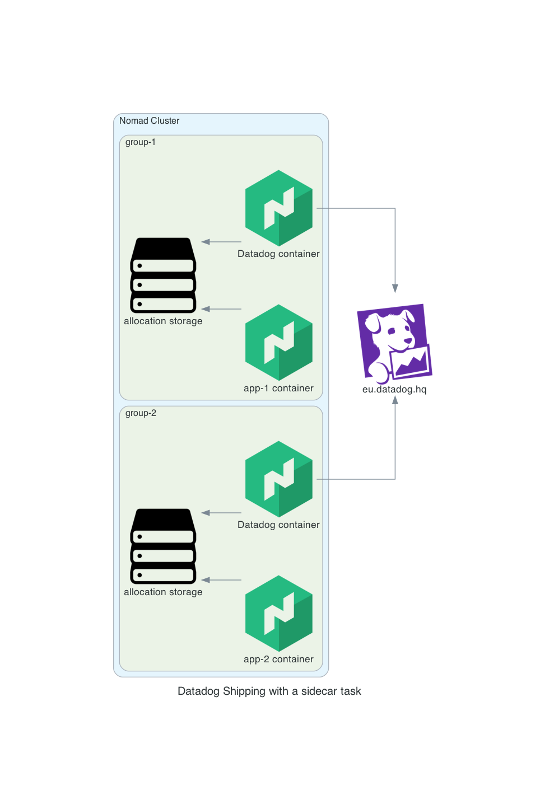

Logging to Datadog from Nomad workload
Last modification on
Ship logs from Nomad workload to Datadog
Context
One common task to achieve during the build of a platform is to have logs ship to a central place where they can be searchable.
In modern architectures, most of the workloads are isolated from each others, so this is not an easy task to send application logs for several reasons :
- Containers are by design isolated
- On a Nomad cluster, you can run others tasks such as java, firecracker VMs, and so.
Solution
There are several ways to ship log from a Nomad workload to Datadog. I will highlight only one, a sidecar task.
In Nomad, task groups are sharing a common file system for each allocations running. have logs ship to a central place where they can be searchable.
Official documentation can be found here. 
The application need to be configured to log in the allocation storage.
This is an example of sending logs from an application :
config :logger, :error_log,
path: "/alloc/data/info.log",
level: :debug